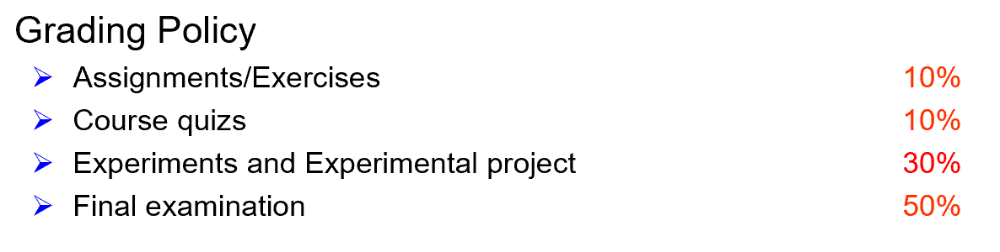
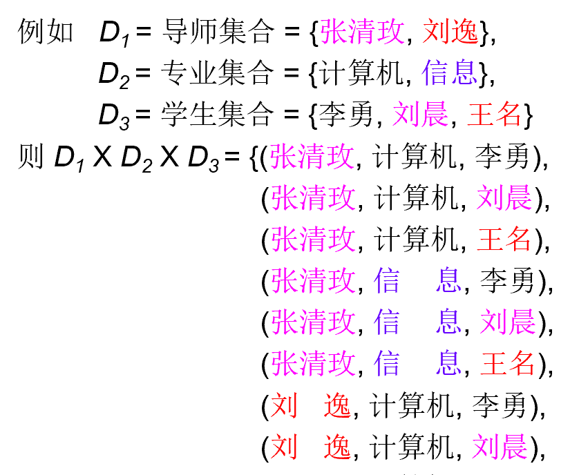
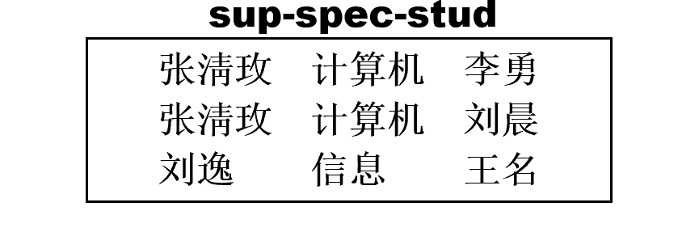
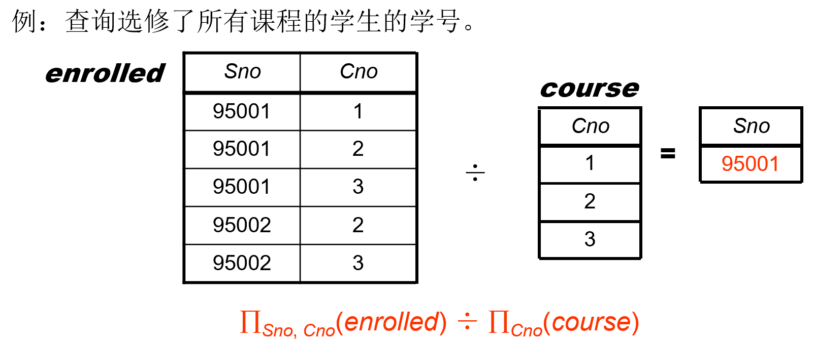

数据库系统
- Database Management System（DBMS）
- 成绩构成：  考试可带A4纸
- 教材：Database System Concepts (7th Edition)
- 1, 2, 3, 4, 5, 6, 7, 12, 13, 14, 15, 16, 17, 18, 19
Lecture 1: Introduction
Purpose
- 数据库：长期存储在计算机内、有组织的、可共享的数据集合
- 数据库系统（DBMS）：数据库 + 可对其进行操作的程序
- DBMS的特征
- 数据访问高效、稳定、可扩展
- 缩短应用的开发时间
- 数据独立性（physical和logical）
- 数据完整性和安全性
-
并发访问和鲁棒性（易恢复
-
DBMS VS File-Processing System
- 文件处理系统由传统的操作系统 （OS） 支持。
View
- 如果想要隐藏
- 新建一个表：空间、同步问题
- 同一张表上用不同的视图
Database Langueage
- Data Definition Language (DDL)
- Data Manipulation Language (DML)
- Data Control Language (DCL)
- SQL = DDL+ DML+DCL
Transaction Management
- 并发访问带来问题
- 数据库保证原子性、一致性、隔离性、持久性
Database Architecture
- Storage Manager
- Query Processor：描述性语句转化成操作
- Overall System Structure
- Application Architecture
Lecture 2: Relational Model
Structure of Relational Databases
基本结构：笛卡尔积 {width=400px} * 可用二维表表示 * 反映特定意义的子集就是关系，例如： {width=300px} * 导师——属性（attribute） * 属性值——原子性（不可分割） * 所有可取的值——域
Key * 可以唯一确定关系中另一个属性的值的属性 * 例如知道学号可以确定学生，学号是key
- Foreign Key（外键）
- 在当前表不能唯一确定，但在另一张表可以
- 专业号不能确定学生，但在另一张{专业号，专业}的表里可以确定专业
Fundamental Relational-Algebra Operations
6个基本操作：收到1-2个表，返回一个表 * Select 选择 （横向切割） * 符号：$\sigma_{branch-name=‘Perryridge’ }(account) $ * ?: Note that, the selection conditions need to aim at the attribute values of the same tuple, when we conduct section operation.
- Project 投影 （纵向切割——注意相同的集合元素要合并）
- Union 并
- set difference 差（集合差）
- Cartesian product 笛卡儿积
- Rename 改名（重命名）
Example Queries 5: Find the names of all customers who have a loan at the Perryridge branch.
方法1：customer-name(branch-name=‘Perryridge’ (borrower.loan-number = loan.loan-number(borrower x loan))) 方法2：customer-name(borrower.loan-number = loan.loan-number (borrower x (branch-name=‘Perryridge’ (loan)))) * 需要乘的东西更少，节省开销
Example Queries 7: Find the largest account balance (i.e., self-comparison).
- 改名的用处
Additional Relational-Algebra Operations
Four basic operators
- Set intersection 交 可以用差来表示：A ∩ B = A - (A - B)
- Natural join 自然连接 多个表的操作经常用到
由笛卡尔积和选择组成 * Notion: \(\gamma \bowtie s\)
- Division 除
笛卡尔积的逆运算 {width=450px}
- Notion: $ r \div s$
用基本操作推导
- Assignment 赋值 \(<-\)
Summary: * Union, set difference, Set intersection 为双目、等元运算 * Cartesian product, Natural join, Division 为双目运算 * Project, select 为单目运算
- 优先级：单目>多目，乘除>加减
Extended Relational-Algebra Operations
Generalized Projection: 广义投影 * 可以用代数运算产生一个新属性
Aggregate Functions: 聚合函数 * Aggregation function takes a collection of values and returns a single value as a result. avg: average value min: minimum value max: maximum value sum: sum of values count: number of values
式子前面加属性A：根据属性A分组，返回一个关系
E.g., 求平均存款余额 $g_{avg(balance)}(account) $
Modification of the Database
数据库更改操作: Deletion, Insertion, Updating All these operations are expressed using the assignment operator.
Lecture 3: SQL
Structured Query Language——结构化查询语言 与国际标准不同——没人要 与国际标准相同——易替代
Data Definition Language
CREATE TABLE branch
(branch_name char(15) not null,
branch_city varchar(30),
assets numeric(8,2),
primary key (branch_name))
Domain Types: * char(n): Fixed length character string, with user-specified length. * varchar(n): Variable length character strings, with user-specified maximum length n. * int: Integer (a finite subset of the integers that is machine-dependent). * smallint: Small integer (a machine-dependent subset of the integer domain type). * numeric(p, d): Fixed point number, with user-specified precision of p digits, with d digits to the right of decimal point. * real, double precision: Floating point and double-precision floating point numbers, with machine-dependent precision.
DROP TABLE r：将数据和表都删掉
Basic Structure Set Operations Aggregate Functions Null Values Nested Subqueries Views Derived Relations Modification of the Database Joined Relations
file:///E:/book/DB/Database_System_Concepts.pdf